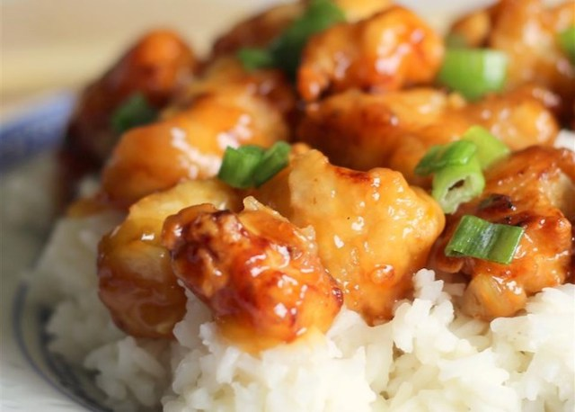

Asian Orange Chicken

Description
A delicious citrus chicken recipe.
Ingredients
Sauce
- 1 1/2 cups water
- 2 tbsp orange juice
- 1/4 cup lemon juice
- 1/3 cup rice vinegar
- 2 1/2 tbsp soy sauce
- 1 tbsp grated orange zest
- 1 cup packed brown sugar
- 1/2 tsp minced fresh ginger root
- 1/2 tsp minced garlic
- 2 tbsp chopped green onion
- 1/4 tsp red pepper flakes
- 3 tbsp cornstarch
- 2 tbsp water
Chicken
- 2 boneless, skinless chicken breasts, cut into 1/2 inch pieces
- 1 cup all-purpose flour
- 1/4 tsp salt
- 1/4 tsp pepper
- 3 tbsp olive oil
Steps
- Pour 1 1/2 cups water, orange juice, lemon juice, rice vinegar and soy sauce into a saucepan and heat over medium-high
heat. Stir in the orange zest, brown sugar, ginger, garlic, chopped onion and red pepper flakes. Bring to a boil.
Remove from heat and cool for 10 to 15 minutes.
- Place the chicken pieces into a resealable plastic bag. When contents of saucepan have cooled, pour 1 cup of sauce
into bag. Reserve the remaining sauce. Seal the bag and refrigerate for at least two hours.
- In another resealable plastic bag, mix the flour, salt and pepper. Add the marinated chicken pieces. Seal the bag
and shake to coat.
- Heat the olive oil in a large skillet over medium heat. Place the chicken into the skillet and brown on both
sides. Drain on a plate lined with paper towels and cover with aluminium foil.
- Wipe out the skillet and add the sauce. Bring to a boil over medium-high heat. Mix together the cornstarch and
2 tbsp water and stir into the sauce. Reduce heat to medium-low, add the chicken pieces and simmer for about 5 minutes,
stirring occasionally.